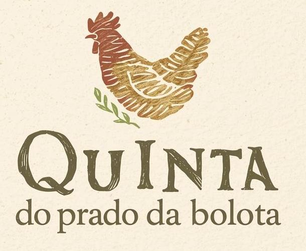

Ovos do campo
Ovos recolhidos regularmente, com casca firme e gema intensa, ideais para familias, pastelaria caseira e pequenos negocios locais.

Ovos, horta e saberes do campo
Produtos biologicos de pequena escala, ovos frescos de galinhas criadas ao ar livre e experiencias para aprender com a terra, as estacoes e os ritmos simples da quinta.
Da quinta para a mesa
Ovos recolhidos regularmente, com casca firme e gema intensa, ideais para familias, pastelaria caseira e pequenos negocios locais.
Horticolas e aromaticas conforme a epoca, cultivados com cuidado, sem pressas e com respeito pelo solo.
Pequenas selecoes da semana para quem gosta de cozinhar com o que esta no ponto certo.
Aprender com as maos
Oficinas praticas para adultos, familias e escolas: compostagem, horta biologica, ervas aromaticas, alimentacao sazonal, cuidados com galinhas e ciclos da natureza.
Preparacao do solo, sementeiras, rega e consociacoes simples.
Como transformar restos organicos em alimento para a terra.
Rotinas de bem-estar animal, recolha e conservacao de ovos.
Experiencias
Recebemos pequenos grupos por marcacao para conhecer a quinta, apanhar ingredientes da epoca e terminar com uma mesa simples, feita com o que a terra oferece.
Encomendas e marcacoes